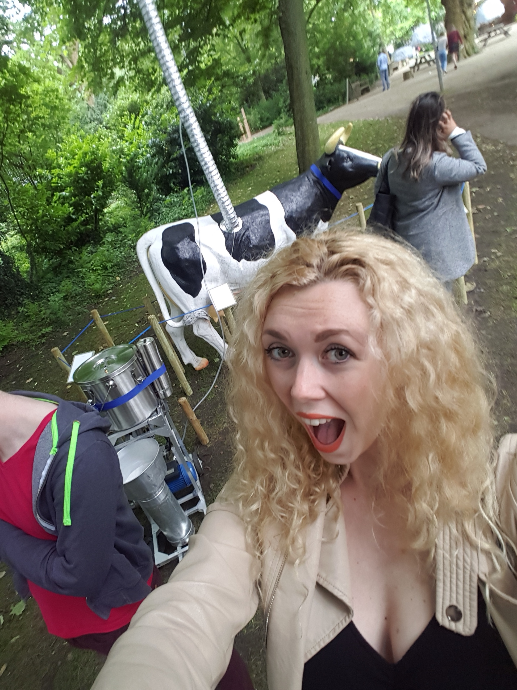

Excursie
Opdracht

Ik heb gekozen voor het project COW&Co door Anastasia Eggers en Ottonie van Roeder. Het project zag er in eerste instantie uit als een grote koe met veel gedoe om zich heen. Het project ging erom dat over de laatste jaren consumenten hun interesse verliezen in de connectie tussen hen en voedsel productie. De harde realiteit tussen de leuke foto's op melkverpakkingen en wat er echt aan de hand is. COW&CO gaat in op deze relatie tussen mensen en koeien en geven een ander 'business model', de koe is hier een onafhankelijke entrepneur. De koeien gaan over hun eigen bedrijf. De koeien zijn dichtbij de bewoners van steden en de bewoners kunnen een koe opzoeken om zo verse melk te verkrijgen. Elke koe heeft een robotische melk machine en een welfare sensore die hen klanten laat beoordelen. De uitstoor van mathaan gas van de koe zorgt voor de power voor de robotische melk machine. Nu hebben koeien de mogelijkheid om vrij rond te lopen en om zelfs het land te kopen welke ze nodig hebben omzichzelf te voeden doordat ze direct geld krijgen van hun klanten.
Ik vind dit project interessant omdat het er als eerste vreemd uitziet. Het is een koe met hierom een hele machine gebouwd. Daarnaast is het natuurlijk een 'absurd' idee, een koe die zijn eigen bedrijf heeft. Toch vind ik de denkwijze erg interessant, het is het op een compleet andere manier kijken naar een daadwerkelijk belangrijk probleem. Wie weet is dit wel echt iets wat zou kunnen werken, of misschien moet er iniedergeval ook vanuit deze denkwijze gekeken worden naar dit probleem. Ook vind ik het een leuke toevoeging dat er allemaal 'stappen' om de koe heen zijn geplaats die ook echt daadwerkelijk om de koe benaderen gaan. Niet vanaf de achterkant benaderen bijvoorbeeld, alsof je echt een 'meeting' hebt met de koe en zijn bedrijf. Ik vind dit een erg interessante manier om naar een probleem te kijken, je vermenselijkt de koe als het ware.